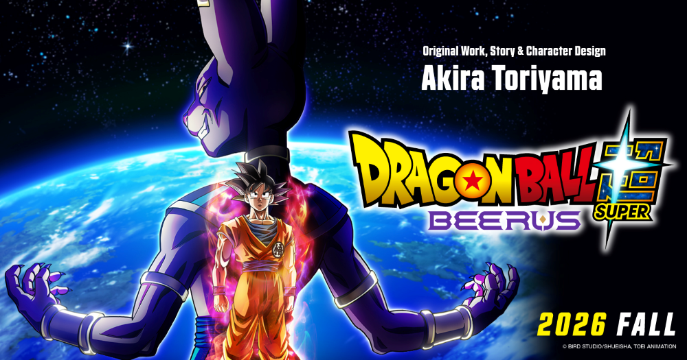
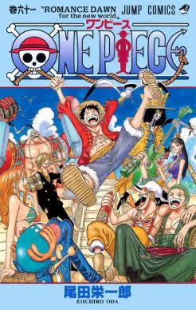
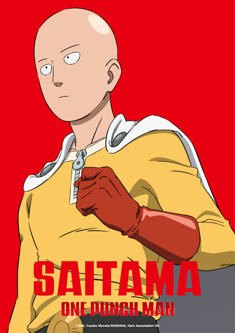
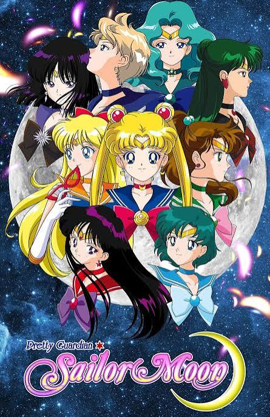

El nuevo Remake de dragon ball Super
Años después de la derrota de Majin Buu, la Tierra ha vuelto a la paz. Pero cuando Beerus, el Dios de la Destrucción, despierta, esa paz se rompe. Atraído a la Tierra por rumores sobre el saiyajin que derrotó a Freezer, Beerus busca retar a Goku con un poder capaz de destruir planetas enteros. Ahora, Goku y sus aliados deben hacerle frente a Beerus en una batalla que sacudirá el universo..
Ver ahoraAnimes similares

One piece
las aventuras de Monkey D. Luffy y su tripulación pirata

One puch man
Saitama, un superhéroe tan poderoso que derrota a cualquier enemigo de un solo golpe

Sailor Moon 3
una adolescente común que recibe el poder mágico para transformarse en una heroína con traje de marinero